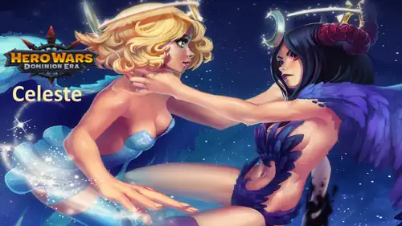
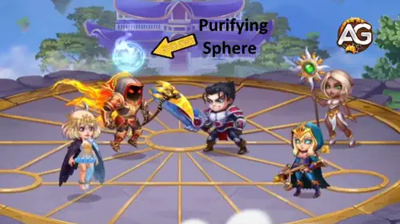
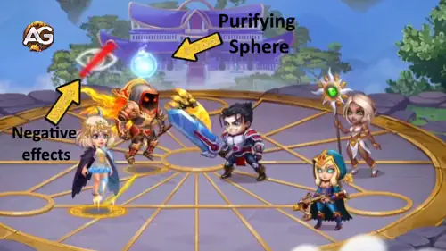

Celeste is one of the most fascinating heroes in Hero Wars: Dominion Era, balancing between the powers of light and darkness.
She can switch forms mid-battle, making her one of the most versatile mages in the game.
In her Light Form, Celeste shines as a healer, removing debuffs and restoring her allies’ strength.
In her Dark Form, she turns into a fearsome mage, blocking enemy healing and converting it into raw damage.
This delicate balance makes her essential in both physical and magic-based teams.

Celeste Guide - Hero Wars: Dominion Era, a game developed by Nexters.
Who Is Celeste?
Celeste is a Mage and Healer who fights from the middle line, relying on her Intelligence as her main stat.
She embodies the duality of day and night, offering both protection and destruction depending on her form.
Class: Mage / Healer
Position: Middle Line
Main Stat: Intelligence
Her light and dark abilities make her a flexible hero for many team compositions. Whether supporting allies with healing
or punishing enemies by denying their healing, Celeste always brings unique value to the battlefield.
This guide will explore her skills, best synergies, and strategies to maximize her potential,
helping you understand how to wield both the sunlight and shadows to dominate your battles.
Celeste Pros and Cons - Hero Wars: Web and Facebook
✅ Pros
Dual forms allow her to switch between healing (Light Form) and high magic damage with anti-heal effects (Dark Form).
Ultimate skill “Two Fates†can be used with only 50% energy, letting her constantly change forms and adapt to the battle.
Strong synergy with heroes like Nebula and Iris for maximizing magic damage output.
Light Form heals allies and removes debuffs, making her a versatile support in physical damage teams.
Dark Form blocks enemy healing and converts it into damage, making her effective against sustain-heavy teams.
High Magic Attack and Magic Penetration growth with artifacts, pets, and glyphs, enhancing both damage and utility.
⌠Cons
Relies heavily on Magic Damage; suffers against magic-immune heroes like Rufus.
Area healing and anti-heal mechanics are less effective against single-target burst damage.
Vulnerable to shields and damage absorption effects (e.g., Corvus, Isaac).
Form switching requires energy management; losing Two Fates effectiveness can reduce overall impact.
Squishy in front lines; positioning is crucial to survive while maximizing her skills.
Celeste Skills Upgrade Priority - Hero Wars: Dominion Era
Understand Celeste’s skills in simple terms and learn which ones to upgrade first for healing, damage, and team utility in Hero Wars.
1st - Two Fates
This is Celeste’s ultimate and the main reason she is so unique. It allows her to switch between Light Form and Dark Form.
In Dark Form, she creates a large flame in the enemy team that blocks healing. In Light Form, she heals the weakest ally for 5 seconds.
Without this skill, Celeste cannot change forms, so she loses her main power.
Another special trait of this skill is that Celeste is the only hero in Hero Wars: Dominion Era who needs just
50% of her energy bar (instead of the usual 100%) to activate her ultimate.
This means she can switch forms more frequently than any other hero, constantly balancing healing and anti-healing effects during battle.
Evolution Priority:Very High – Always upgrade this first because it unlocks both her healer and damage roles.
Light Form – Healing

Skill - Two Fates Light, Hero Wars Dominion Era.
Dark Form – Healing Block
Skill - Two Fates Dark, Hero Wars Dominion Era.
2nd - White Night
This skill works automatically during battle.
In Dark Form, it places a smaller healing block flame on enemies.
In Light Form, it heals the weakest ally again.
Because it activates often, it adds steady support or pressure on the enemy.
Evolution Priority:High – Great consistent value. Upgrade this second to improve both her healing and anti-heal effects.
Light Form – Heal
Skill - White Night Light, Hero Wars Dominion Era.
Dark Form – Healing Block
Skill - White Night Dark, Hero Wars Dominion Era.
3rd - Limbo
Limbo adds extra power to Celeste’s forms.
In Dark Form, part of the enemy’s blocked healing is turned into magic damage.
In Light Form, it cleanses allies by removing negative effects before healing.
This makes her a hybrid damage-dealer and support hero.
Formula: Dark – (42% + (Ivl * 0.2 + 20)%) healing blocked converted to damage | Light – chance to block debuff ~130.
Evolution Priority:Medium High – Useful for cleansing and extra damage. Upgrade after her first two main skills.
Light Form – Cleanse

Skill - Limbo Light, Hero Wars Dominion Era.
Dark Form – Damage Conversion
Skill - Limbo Dark, Hero Wars Dominion Era.
4th - Zenith
This is Celeste’s passive ability.
In Dark Form, her basic attacks deal magic damage.
In Light Form, her basic attacks heal allies a little.
While this is helpful, it doesn’t have as much impact as her other abilities.
Merlin is the best pet for Celeste, as he boosts Magic Attack and Magic Penetration, making her damage and healing much stronger. His patronage skill Tempus Magica! speeds up the casting of her Light and Dark skills, allowing her to heal more often or apply healing block faster. This synergy fits perfectly with her dual role in battle.
Axel is an excellent defensive option for Celeste. His patronage reduces the damage Celeste can take from a single hit, keeping her alive longer so she can keep healing or shutting down enemy healing. While he doesn’t improve her magic power directly, his survivability boost makes him a reliable choice in tougher battles.
Biscuit works well with Celeste’s Dark Form, as both focus on healing reduction. With Biscuit, Celeste’s attacks weaken enemy healing even further, stacking with her Cursed Flame effect. However, since this overlaps with her own skill, it is less impactful than Merlin or Axel.
Khorus offers shields based on magic damage dealt, which can be useful for Celeste and other Intelligence heroes. While this adds survivability to the team, it doesn’t directly enhance Celeste’s core role as much as Merlin or Axel. It’s a situational option for magic-heavy teams.
Best Skin for Celeste Hero Wars: Dominion Era
Celeste’s skins greatly enhance her healing and magic damage. Choosing the right upgrade order maximizes her role as both a healer and damage dealer.
Default Skin – Intelligence
Stats gain: Intelligence +1365
- Magic attack from Intelligence: +4,095
- Magic defense from Intelligence: +1,365
- Physical attack from Intelligence: +1,365
Evolution Priority:High – This skin improves overall stats and scales her healing and damage, making it a solid early upgrade.
Total of Intelligence Skin Stones for max level:
30,825
Winter Skin – Magic Attack
Stats gain: Magic Attack +10,650
Evolution Priority:Very High – Directly boosts both her Light Form healing and Dark Form damage, making this the most impactful skin for Celeste.
Total of Intelligence Skin Stones for max level:
53,412
Spring Skin – Magic Attack
Stats gain: Magic Attack +10,650
Evolution Priority:Medium High – Also improves her healing and damage, but since Winter Skin already covers Magic Attack, this becomes a secondary upgrade.
Total of Intelligence Skin Stones for max level:
55,410
Romantic Skin – Magic Defense
Stats gain: Magic Defense +10,650
Evolution Priority:Medium – Provides survivability against magic damage teams, useful in specific matchups but not as universally strong as offensive skins.
Total of Intelligence Skin Stones for max level:
55,410
Masquerade Skin – Magic Penetration
Stats gain: Magic Penetration +10,650
Evolution Priority:Low – Helps bypass enemy magic defense, but Celeste’s main role is healing and utility, making this less critical than her Magic Attack skins.
Total of Intelligence Skin Stones for max level:
55,410
Celeste Artifact Evolution Priority Hero Wars: Dominion Era
Understanding Celeste’s artifact priority is key to boosting both her support and damage potential. Focusing on the right ones maximizes her Light and Dark Form impact.
Weapon Artifact: Celeste’s Crown
Magic Attack: +50,190
Evolution Priority:Very High – This is Celeste’s most important artifact because it activates with her ultimate ability, frequently boosting the entire team’s Magic Attack for 9 seconds. Since her ultimate costs only 50% energy, this buff is triggered often, greatly enhancing team performance.
Book Artifact: Manuscript of the Void
Magic Penetration: +10,680 | Magic Attack: +8,364
Evolution Priority:High – Magic Penetration is crucial for Celeste’s Dark Form damage, ensuring her flames and healing block break through enemy defenses. The additional Magic Attack also improves both her offensive and healing abilities, making this her second most important artifact.
Ring Artifact: Ring of Intelligence
Stats gain: Intelligence: +6249
- magic attack from Intelligence: +18.747
- Magic Defense from from Intelligence: +6249
- Physical Attack from Intelligence: +6249
Evolution Priority:Medium – The ring provides excellent scaling stats through Intelligence, boosting both her healing and damage. However, its impact is more general and less team-focused than her Weapon and Book, so it should be upgraded after those.
Celeste Glyph Evolution Priority
Discover the best glyph upgrade priority for Celeste in Hero Wars Dominion Era to maximize her healing, damage, and survivability.
1st Glyph - Magic Attack:
Stats gain: +6,500 Magic Attack
Evolution Priority:Very High – Boosts both Light Form healing and Dark Form damage. Always upgrade first for maximum battle impact.
2nd Glyph - Health:
Stats gain: +62,200 Health
Evolution Priority:Medium – Improves survivability but doesn’t enhance healing or damage directly. Upgrade after offensive glyphs are maxed if you face heavy burst teams.
3rd Glyph - Magic Defense:
Stats gain: +6,500 Magic Defense
Evolution Priority:Low – Protects against enemy mages but has the least impact on her core roles. Upgrade only for survivability in magic-heavy battles.
4th Glyph - Magic Penetration:
Stats gain: +6,500 Magic Penetration
Evolution Priority:High – Ensures Dark Form damage reaches high-resistance enemies. Vital for team fights against tanks or mages.
5th Glyph - Intelligence:
Stats gain: Intelligence +1,135
Magic Attack: +3,405
Magic Defense: +1,135
Physical Attack: +1,135
Evolution Priority:Medium – Balanced stat but less direct impact than Magic Attack or Penetration. Upgrade after key offensive glyphs.
How to Counter Celeste - Hero Wars: Dominion Era
Learn which heroes can effectively counter Celeste based on their skills and how they exploit her weaknesses in battle.
Cornelius
Cornelius hits the enemy with the highest Intelligence with a monolith, dealing massive damage proportional to their Intelligence. Since Celeste’s main stat is Intelligence, she takes heavy damage.
Corvus’s altar deals pure damage to all enemies. Because Celeste relies on area anti-heal damage, Corvus bypasses her strengths and punishes her severely.
Isaac
Isaac’s Tes'Lin Magic Power Capacitor absorbs a portion of any magic damage, including Celeste’s, and converts it into Charge. This prevents her from effectively damaging Isaac and his allies.
Rufus is immune to magic damage, and since Celeste only deals magic damage even with her basic attacks she cannot eliminate Rufus under any circumstances.
Celeste Best War Flags - Hero Wars
Discover the best War Flags for Celeste, enhancing her healing, magic damage, and overall team utility in Dominion Era battles.
War Flag of Recovery:
This flag boosts all healing by 10%, perfectly enhancing Celeste's Light Form and making her healing more effective for the entire team.
Celeste and Team Benefit: Increased healing output allows Celeste to keep allies alive longer, synergizing with physical damage and hybrid teams.
War Flag of Decline:
This flag reduces enemy healing by 10%, maximizing the effectiveness of Celeste’s Dark Form and her anti-heal mechanics.
Celeste and Team Benefit: Weakening enemy sustain allows Celeste and her allies to deal more damage over time and control the flow of the battle.
Best Teams for Celeste – Hero Wars: Dominion Era
Top Defense Teams for Celeste
#
Table: Best Defense Teams for Celeste
Lyria, Dante, Celeste, Orion, Augustus, Khorus
Astaroth, Satori, Celeste, Jorgen, Faceless, Axel
Astaroth, Satori, Celeste, Amira, Lian, Axel
Top Attack Teams for Celeste
#
Table: Best Attack Teams for Celeste
Khorus, Augustus, Orion, Celeste, Dante, Lyria
Axel, Faceless, Jorgen, Celeste, Satori, Astaroth
Axel, Lian, Amira, Celeste, Satori, Astaroth
Conclusion
Celeste's unique ability to gain energy quickly allows her to switch forms frequently, giving teams a flexible mix of healing and magic damage.
However, her weapon artifact bonus only lasts for a limited time, so careful timing is essential to maximize its effect.
Currently, Celeste shines most in campaign stages, especially the late levels where enemies have strong healing abilities, making her anti-heal and burst support invaluable.
Despite this, she sees limited usage in the current PvP meta, as many competitive teams favor faster or more consistent damage dealers.
About the Author
Alexandre Domingos holds a postgraduate degree in Engineering and works as a Production Supervisor. In his spare time, he explores the gaming world as a YouTuber and blogger at Alexandre Games, combining his passion for technology and strategy. He has been immersed in gaming since the age of 5, starting on classic platforms like MSX, Master System, Nintendo, and even an old 286 PC. Since 2019, Alexandre has also been playing Hero Wars and Mobile Legends, among other mobile games, creating guides, tutorials, and analyses for the community.
Did you like our Celeste Guide for Hero Wars Web and Facebook? Is there something you didn't understand or would like to suggest changes to? We invite you to join our comment section on the Alexandre Games Blog page. Feel free to express your opinion, clarify your doubts, and share your suggestions. Click the button below to get started:


 30,825
30,825